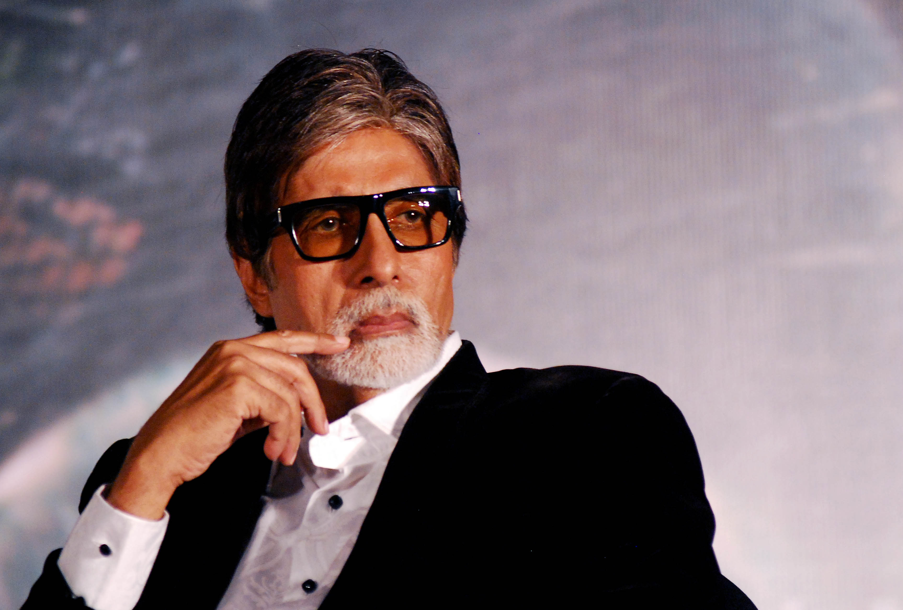

AMITHA BACHAN

Amitabh Bachchan (pronounced) born as Amitabh Srivastava;[1] 11 October 1942[7]) is an Indian actor who works in Hindi cinema. With a cinematic career spanning over five decades, he has played pivotal roles in over 200 films. Widely recognised as one of the greatest actors of all time, he is considered to be amongst the most accomplished and influential actors in the history of Indian cinema.[8] Bachchan is often hailed as the Shahenshah of Bollywood, Sadi Ke Mahanayak (translated as "Greatest actor of the century" in Hindi), Star of the Millennium, or simply Big B.[9] His dominance in the Indian film industry during the 1970s–80s led the French director François Truffaut to describe it as a "one-man industry".[10]

disclamier;provided by surya